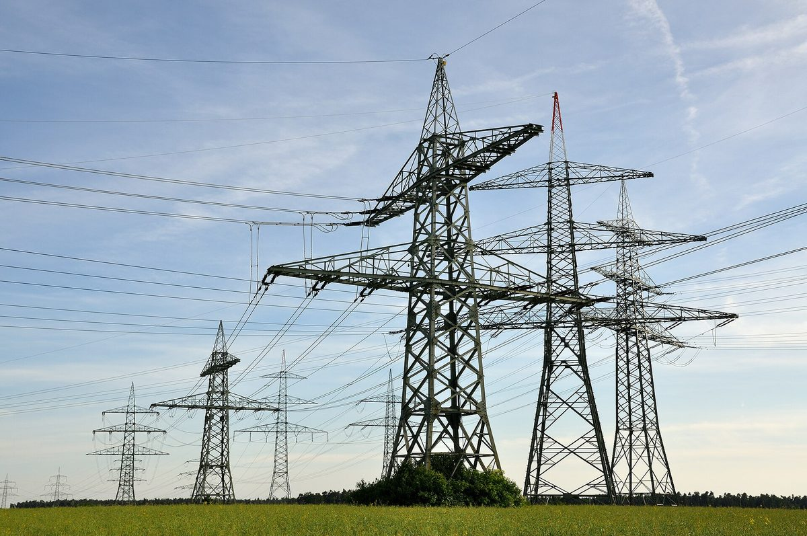

전력망 확충 필요엔 71.6% 공감, 우리 동네 건설엔 45.4%만 동의…고창 신고창변전소는 주민 유치위원회로 81일 만에 입지 확정

한전, 국회 전력망 확충 대토론회서 성인 1,400명 인식조사 공개…주민이 꼽은 수용 조건은 지속 소득·수익 공유, 독일은 송전망 계획 대비 5,957㎞ 미달
송전탑과 변전소를 늘려야 한다는 데는 국민 10명 중 7명 넘게 공감하지만, 자기 동네에 들어서는 것에 동의하는 사람은 절반에 못 미치는 것으로 나타났다. 한국전력공사가 지난 10월 성인 1,400명에게 물은 결과 전력망 확충이 필요하다는 응답은 71.6%, 거주 지역 안 건설에 동의한다는 응답은 45.4%였으며, 이광직 한전 전력망입지처장이 9일 국회의원회관에서 열린 2026 전력망 확충 국회 대토론회에서 이를 공개했다. 소음·경관 불편을 예상한 비율은 건설 예정 지역에서 57.7%였지만 이미 설비가 있는 지역에서 실제로 느끼는 불편은 31.7%에 그쳤고, 전자파·사고 같은 안전 우려도 56.7%에서 49.0%로 낮았다. 주민들은 받아들일 조건으로 지속적인 소득과 수익 공유, 기업 유치와 일자리, 생활환경 개선을 꼽았다. 전북 고창군 성송면의 345kV 신고창변전소는 2023년 계획이 나온 뒤 약 3년간 멈춰 있었으나, 지난 7월 주민들이 스스로 유치위원회를 꾸리고 9월 34개 마을이 만장일치로 유치를 신청해 실거주 주민 95% 이상의 찬성 속에 보통 18개월가량 걸리는 입지 선정을 81일 만에 끝냈다. 독일은 2023년까지 송전망 8,652㎞를 지으려 했지만 2,695㎞에 그쳐 일정이 약 7년 늦어졌고, 땅속에 묻는 지중화는 철탑보다 비용이 10배가량 들어 새 송전선로는 가공선로를 우선하는 쪽으로 돌아서고 있다.
시민에너지 관점
주민이 꼽은 수용 조건 첫머리가 지속적인 소득과 수익 공유라는 점, 주민이 직접 나선 고창이 18개월 걸릴 일을 81일에 끝냈다는 점이 답을 말해 준다. 전자파 걱정을 정보 제공만으로 풀겠다는 접근으로는 부족하다는 지적이 나올 수 있고, 실제로 주민을 움직인 것은 우리 마을에 무엇이 남느냐였다. 송전망이 지나는 마을이 그 길로 흐르는 재생에너지 발전소의 지분을 갖고 수익을 나눠 받는 구조라면 전력망은 부담이 아니라 마을의 자산이 된다. 정부와 한전은 전력망 입지 선정 단계부터 주민 출자형 재생에너지와 이익 공유를 함께 설계해야 한다.
출처: 디지털데일리 2026-11-09 김유진 기자 원문 보기
送電網拡充の必要性には71.6%が共感、自分の地域での建設に同意は45.4%のみ…高敞の新高敞変電所は住民の誘致委員会で81日で立地確定
韓国電力、国会の送電網拡充大討論会で成人1,400人の意識調査を公表…住民が挙げた受け入れ条件は継続的な所得・収益共有、ドイツは送電網計画に5,957km届かず
送電鉄塔や変電所を増やすべきだという点には国民の10人に7人以上が共感しているが、自分の地域に建つことに同意する人は半数に満たないことが分かった。韓国電力公社が10月に成人1,400人に尋ねたところ、送電網の拡充が必要だとの回答は71.6%、居住地域内での建設に同意するとの回答は45.4%で、李光稙（イ・グァンジク）韓電送電網立地処長が9日、国会議員会館で開かれた「2026送電網拡充国会大討論会」で公表した。騒音や景観の不便を予想した割合は建設予定地域で57.7%だったが、すでに設備がある地域で実際に感じる不便は31.7%にとどまり、電磁波や事故など安全面の懸念も56.7%から49.0%に下がった。住民は受け入れの条件として、継続的な所得と収益共有、企業誘致と雇用、生活環境の改善を挙げた。全羅北道高敞郡星松面の345kV新高敞変電所は2023年に計画が出たあと約3年間止まっていたが、7月に住民が自ら誘致委員会をつくり、9月には34の集落が満場一致で誘致を申請し、実際に住む住民の95%以上の賛成を得て、通常18カ月ほどかかる立地選定を81日で終えた。ドイツは2023年までに送電網8,652kmを建設する計画だったが2,695kmにとどまって日程が約7年遅れ、地中化は鉄塔の10倍ほど費用がかかるため、新しい送電線では架空線を優先する方向へ転じつつある。
市民エネルギーの視点
住民が挙げた受け入れ条件の筆頭が継続的な所得と収益共有であること、住民自らが動いた高敞が18カ月かかる作業を81日で終えたことが答えを示している。電磁波への不安を情報提供だけで解こうとする手法では足りないとの指摘もあり得るし、実際に住民を動かしたのは「自分の集落に何が残るか」だった。送電網が通る集落が、その線を流れる再生可能エネルギー発電所の持ち分を持ち、収益を分け合う仕組みであれば、送電網は負担ではなく集落の資産になる。政府と韓電は送電網の立地選定の段階から、住民出資型の再エネと利益共有をあわせて設計すべきだ。
出典: 디지털데일리 2026-11-09 김유진 기자 原文を読む
71.6%认同需扩建电网，但只有45.4%同意建在自家附近…高敞新高敞变电站靠居民招商委员会81天确定选址
韩国电力公社在国会电网扩建大讨论会上公布1,400名成年人认知调查…居民提出的接受条件是持续收入与收益共享，德国输电网建设比计划少5,957公里
调查显示，十名国民中有七名以上认同需要增建输电塔和变电站，但同意建在自己居住地区的人不到一半。韩国电力公社10月对1,400名成年人进行调查，认为需要扩建电网的占71.6%，同意在居住地区内建设的只占45.4%；韩电电网选址处长李光稙9日在国会议员会馆举行的“2026电网扩建国会大讨论会”上公布了这一结果。在拟建地区，预计会有噪音、景观不便的比例为57.7%，而在已有设施的地区，实际感受到不便的只有31.7%；对电磁波、事故等安全问题的担忧也从56.7%降至49.0%。居民提出的接受条件包括持续收入与收益共享、招商引资与就业、改善生活环境。全罗北道高敞郡星松面的345千伏新高敞变电站在2023年提出计划后停滞了约3年，但今年7月居民自发成立招商委员会，9月34个村庄一致申请引进，在95%以上常住居民赞成下，把通常需要约18个月的选址程序缩短到81天完成。德国原计划到2023年建成8,652公里输电网，实际只建成2,695公里，进度延误约7年；由于地下电缆的成本约为铁塔的10倍，德国新建输电线路正转向优先采用架空线。
市民能源视角
居民把持续收入与收益共享列为首要接受条件，居民亲自出面的高敞把需要18个月的事81天就办完了，这已经给出了答案。有人可能会指出，只靠提供信息来化解电磁波担忧并不够，真正打动居民的是“我们村能留下什么”。如果输电线经过的村庄能持有线路所输送的可再生能源电站股份并分享收益，电网就不再是负担，而会成为村庄的资产。政府和韩电应从电网选址阶段起，就把居民出资型可再生能源和利益共享一并纳入设计。
来源: 디지털데일리 2026-11-09 김유진 기자 查看原文
71.6% Agree Korea Needs More Grid but Only 45.4% Accept It Nearby; Residents' Own Committee Secures Gochang Substation Site in 81 Days
KEPCO releases a survey of 1,400 adults at a National Assembly grid forum; residents name steady income and revenue-sharing as conditions for acceptance, while Germany fell 5,957km short of its transmission plan
More than seven in ten South Koreans agree that more transmission towers and substations are needed, but fewer than half would accept them in their own neighbourhood. In a survey of 1,400 adults conducted by Korea Electric Power Corporation (KEPCO) in October, 71.6% said grid expansion was necessary while only 45.4% agreed to construction in their area of residence, KEPCO grid siting director Lee Kwang-jik said on the 9th at the 2026 National Assembly forum on grid expansion, held at the National Assembly Members' Office Building. In areas where facilities are planned, 57.7% expected noise or landscape problems, but in areas that already host them only 31.7% reported actual inconvenience, and safety concerns over electromagnetic fields and accidents fell from 56.7% to 49.0%. Residents named steady income and revenue-sharing, business investment and jobs, and better living conditions as the terms on which they would accept new lines. The 345kV New Gochang substation in Seongsong-myeon, Gochang County, North Jeolla, had been stalled for about three years after it was proposed in 2023, but residents formed their own committee to host it in July, and in September 34 villages applied unanimously with more than 95% of actual residents in favour, completing a siting process that usually takes about 18 months in 81 days. Germany had planned to build 8,652km of transmission lines by 2023 but completed only 2,695km, about seven years behind schedule, and because burying cables costs roughly ten times as much as pylons it is shifting to favour overhead lines for new routes.
Citizen Energy View
The answer lies in two facts: residents put steady income and revenue-sharing at the top of their conditions, and in Gochang, where residents took the lead themselves, an 18-month process was finished in 81 days. Some will argue that simply providing information about electromagnetic fields will not be enough, and indeed what moved residents was what would stay in their village. If villages along a line held stakes in the renewable power plants whose electricity flows through it and shared in the revenue, the grid would become a village asset rather than a burden. The government and KEPCO should design resident-owned renewables and benefit-sharing into grid siting from the very first stage.
Source: 디지털데일리 2026-11-09 김유진 기자 Read the original